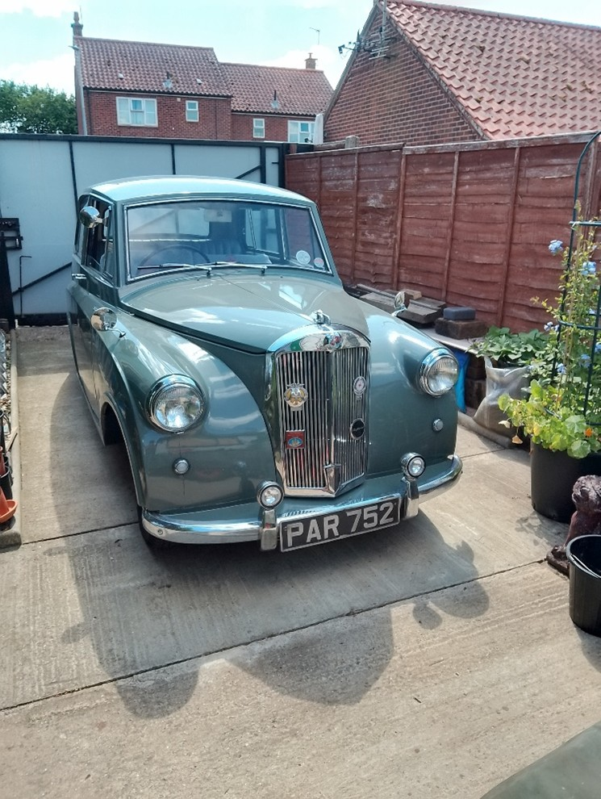
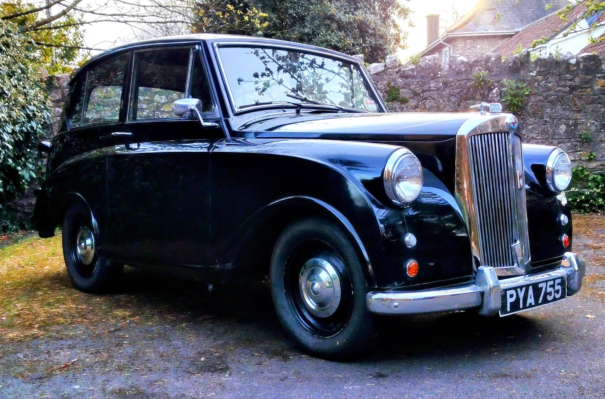
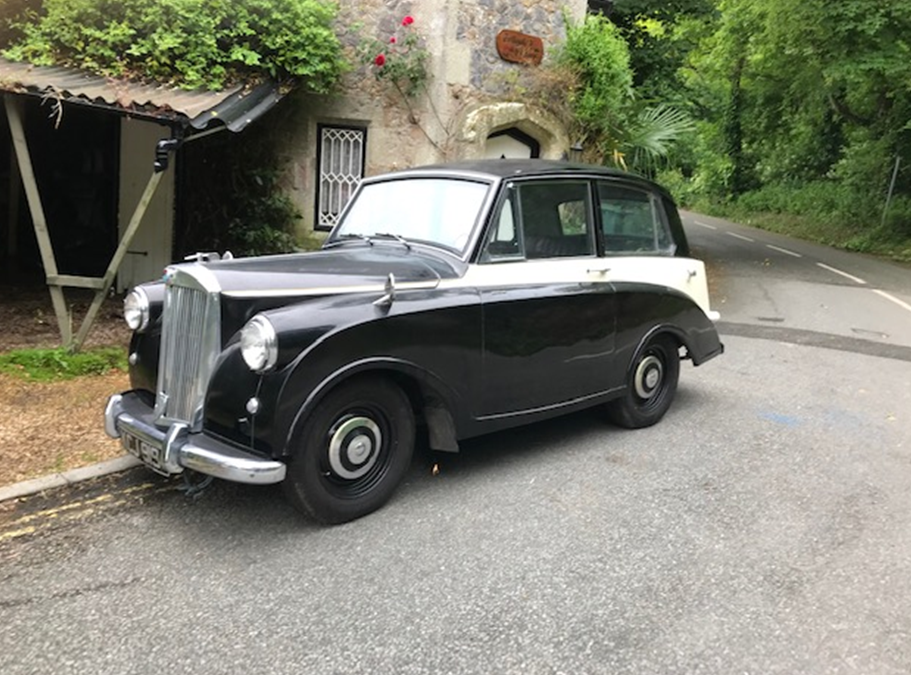

Members’ Classifieds
If you would like to place an advert on this page, please get in-touch with our website editor, Rob (contact details in the sidebar), and he’ll get it published.
The advert will remain on the website for three months after the date of publication and will then be removed. If you have success in selling or acquiring your items in the meantime, please let us know so that we can keep the section relevant and up-to-date.
If after three months you wish for your advert to be re-submitted, please contact Rob again; if this is the case, perhaps you could think about altering the asking price, and possibly submit further photos to enhance the listing and boost your chances of attracting a buyer.
If you are not yet a member, feel free to use this facility to advertise all things Mayflower, but a donation of £10 to the club would be appreciated (cheques made payable to TMC, and sent to the editor; address available on request). This will help in our quest to keep these magnificent cars on the road.
Good luck!
For sale
Cars
Self-explanatory: Mayflowers for sale for range of desired conditions, levels of completion and budgets!
For sale: Triumph Mayflower
“1953 Triumph Mayflower side valve, 1247cc engine.
Drives well, body work good, internals fair condition for age, solid chassis, 5 new tyres, chrome wheel trims and hub caps.
Needs some TLC on core plug, front shock absorbers, and track rod ends.
£2,700 ono.”
Contact: Mr R Riseley – (07745) 650564.
(Advert posted: 21/09/2025. To be removed: 21/12/2025 or when sold.)
For sale: 1953 Triumph Mayflower PYA 755
Reluctant sale (after 50 years of ownership), because of an unexpected house move.
Black with maroon Vynide upholstery. Fitted in the 1980s: a Triumph 1296cc OHV engine to enable it to keep up with modern traffic; a brake servo to help it stop; a stainless steel exhaust system, and flashing as well as semaphore indicators. It served for many years as my daily transport. Last year I spent over £4,300 on having the engine overhauled; a new wiring loom fitted; all the brake cylinders and hoses replaced; structural welding done to both sills; new tyres and battery fitted, and leaky oil seals replaced. Also for sale: many of the parts (some very rare) needed to complete the restoration.
To get the car to concours-condition, the following would be required: repair of minor blemishes to the bodywork; beautifying the engine compartment; replacing some of the sealing rubbers; re-chroming the rear bumper; replacing the headlining and carpets, and replacing the springs in the base of the driver’s seat.
Sensible offers invited!
For more information, or to view the car (near Bristol), please contact Peter Burdge.
Contact: Peter Burdge – (01275) 857845, (07941) 628662, pwburdge@talktalk.net.
(Advert posted: 02/09/2025. To be removed: 02/12/2025 or when sold.)
Triumph Mayflower for sale
Good condition, black and cream paintwork, no rust, oxblood leather interior, stainless exhaust, new battery, five new tyres, brakes overhauled, lots of spares.
Exhaust valves need replacing.
Very reluctant sale.
£2,000Reduced to £1,500
Contact: Dave Campbell (1217) – campbellorchard2000@yahoo.com, (01983) 857789.
(Advert posted: 02/09/2025. To be removed: 02/12/2025 or when sold.)
Parts
Missing something for your build? A part just bitten the dust on you? Be sure to check this section first, in case one of your fellow members is looking to offload one (of course the spares department always has an extensive selection if you can’t find what you’re after here)! If you wish to have a ‘clear out’, gain a little cash and give others the opportunity to obtain the parts they need to keep their Mayflower on the road, then why not contact Rob to have your advert included?
(No listings at present.)
Miscellaneous
This section is for memorabilia, instruction manuals or books associated with the Mayflower. If you have any such unwanted clutter, why not advertise it and let it become someone else’s cherished possession!
Manuals for sale (UK)
“My father was a Mayflower owner and I have a couple of the original manuals:
- The Instruction Book.
- The Spare Parts List.
If interested, please contact me for details.”
Contact: Roy – rs@mypostoffice.co.uk.
(Advert posted: 21/09/2025. To be removed: 21/12/2025 or when sold.)
Wanted
Cars
If you’ve always wanted a Triumph Mayflower (and why not!?), but the right car for you isn’t yet advertised in the cars for sale section, then you can place a free ‘wanted’ request here, stating the condition you would be looking for (e.g. fully-restored, running but needs attention, or even a complete project), together with your price-range and contact details, and we’ll see if we can put you in touch with a possible seller.
Pre-1980 car
A pre-1980 car as a daily driver. Any make or model with overhead valve engine.
Contact: Colin Wiltshire (1246), Herefordshire – (07528) 497696.
(Advert posted: 02/09/2025. To be removed: 02/12/2025 or when sold.)
Parts
If you’re in need of a particular part to complete your project, or just to get back on the road again, firstly look in the parts for sale section, as well as the club’s spares catalogue; then you can place a free request here, stating exactly what you need, and we’ll see if we can put you in-touch with a possible seller.
(No listings at present.)
Miscellaneous
If you’re looking for a particular book, piece of memorabilia or anything else Mayflower-related, and you can’t find it in the miscellaneous for sale section, then you can place a free request here, stating exactly what you need, and we’ll see if we can put you in-touch with a possible seller.
(No listings at present.)